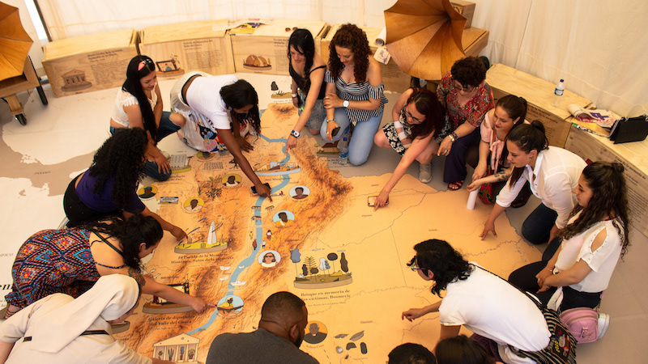
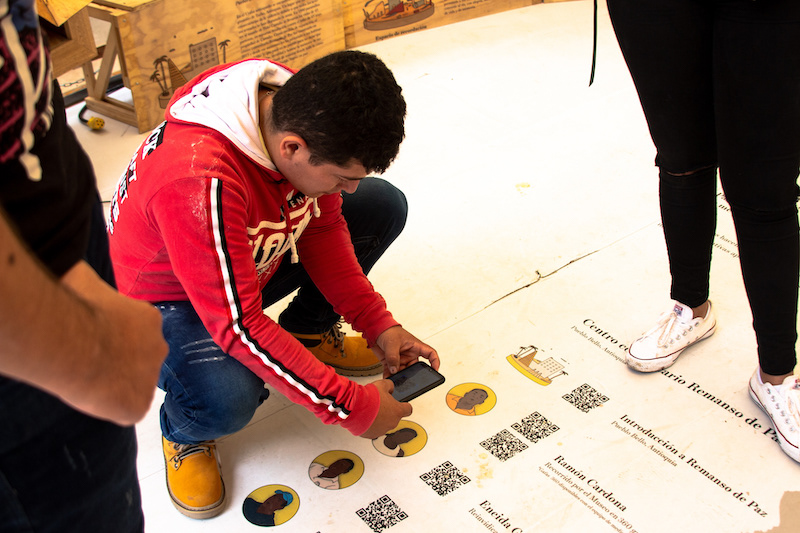
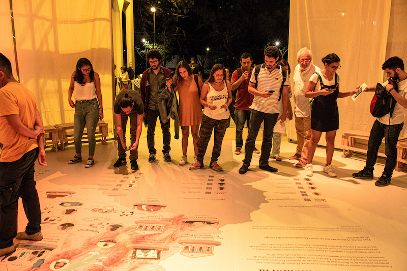

This transmedia map illustrates memory initiatives in Colombia related to the armed conflict. The stories are situated on the map and expanded in a 360º video with community narratives.
Created for the Voces para transformar a Colombia exhibition at the Colombian Museum of Memory with more than 15,000 visitors.
Role: Graphic Design, Illustration


